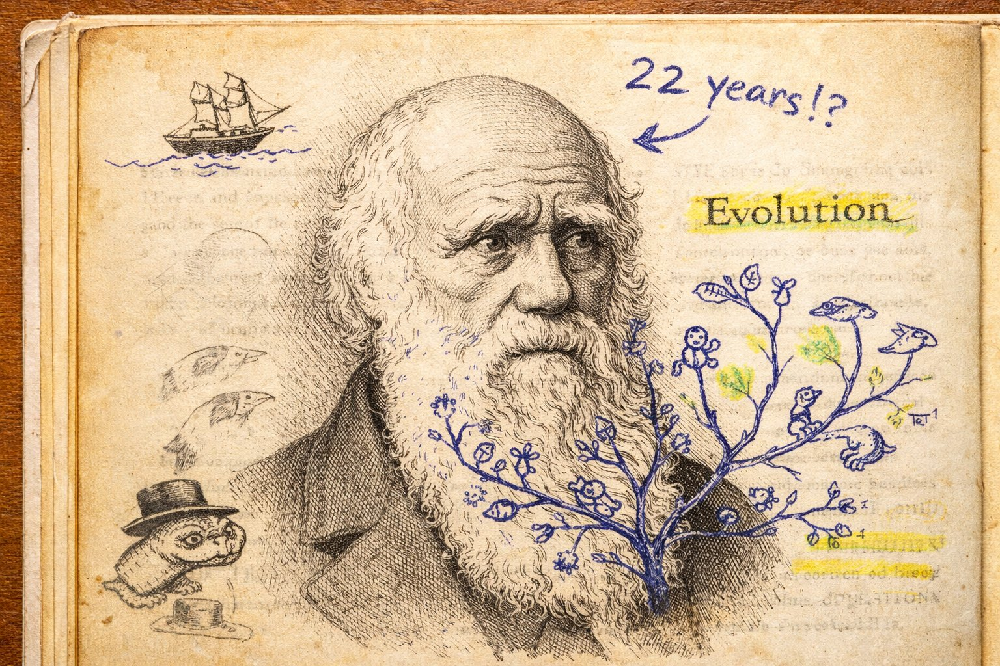
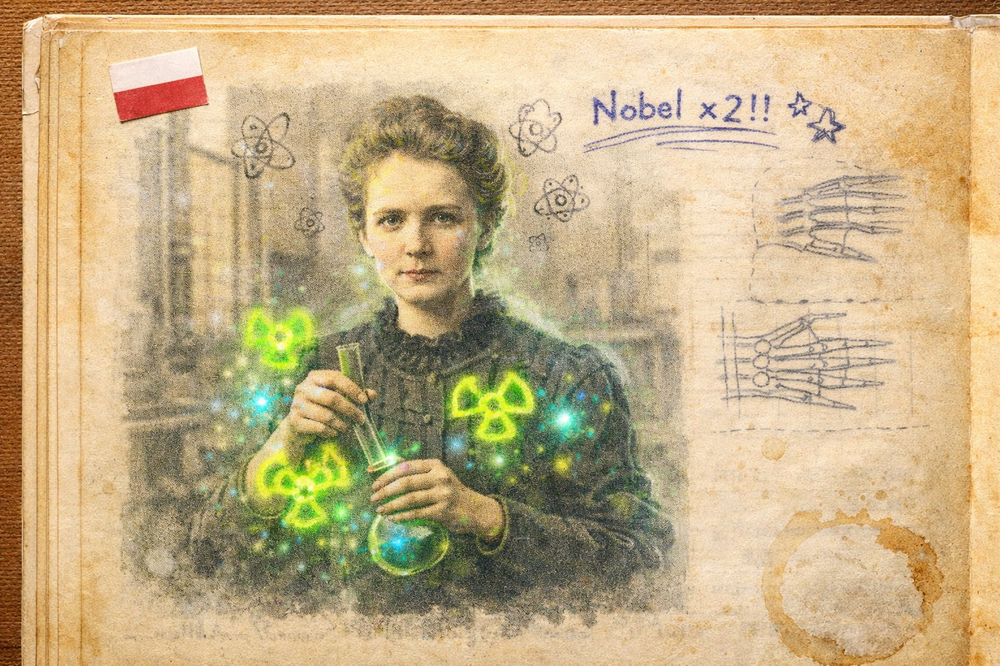
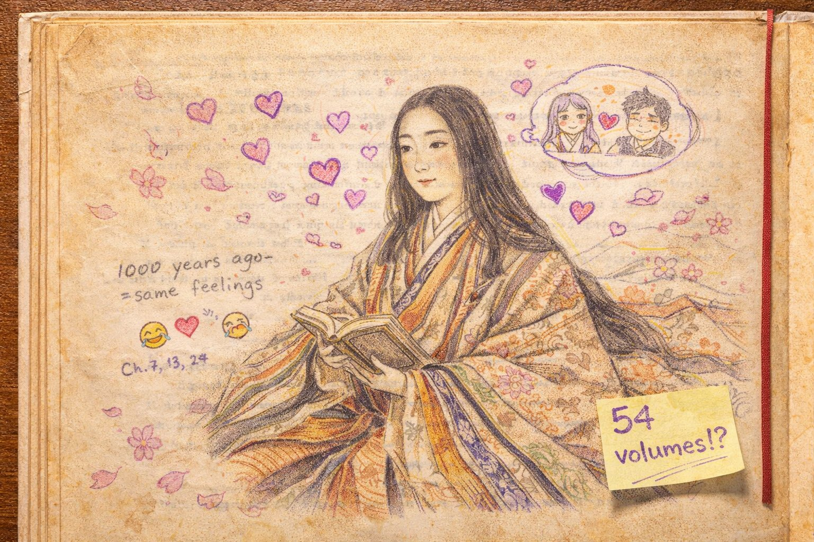

いじんたちの じこしょうかい
— にんげんが にんげんを こえた しゅんかん —
🧬
☢️
📰
📝
🌀

🏆 シリーズ最終巻 — 全17巻・85キャラ完結
📚 じこしょうかいシリーズ 第17巻 ｜ シリーズ一覧
↓ スクロールして よんでね ↓
きんたち、むしたち、けものたち、くさきたち。
ぞうきたち、ほしたち、だいちたち、げんしたち、そざいたち。
はつめいたち、しくみたち、かずたち、かみさまたち。
きもちたち、ものがたりたち、げいじゅつたち。
ぜんぶ べんきょうした きみに、さいごの しつもん。
これを ぜんぶ つなげたのは、だれ？
こたえ：にんげん だ。
なかでも、みんなより ちょっとだけ とおくを みた にんげんたち。
それが「いじん」。
でも いじんは とくべつな いきものじゃない。
おなじ ぞうき、おなじ きもち、おなじ からだの にんげん。
ただ ひとつだけ ちがったのは —— 「なぜ？」を やめなかったこと。

ダーウィンは 進化論 をとなえた にんげん。
ビーグル号で せかいを まわり、ガラパゴスしょとうで きづいた。
「にている けど ちがう」いきものたちは、もともと おなじ そせんから わかれた。
つよいものが いきのこるのではない。
かわれるものが いきのこる。
①きん（バイキン先輩）も、②むし（カブトムシ）も、③けもの（クジラ）も、④くさき（タネちゃん）も、⑤ぞうき（ノウさん）も。
ぜんぶ おなじ いのちの きから のびた えだ。
ダーウィンは、いのちの せかいちずを かいた。
でも この発見は 世界を おこらせた。
「にんげんは サルの なかま？ かみさまが つくったんじゃないの？」
ダーウィンは 22年も 発表を ためらった。こわかったから。
ほんとうのことを いうのは、ときどき いのちがけ。

キュリー夫人は 放射能 を発見した にんげん。
ウランから めに みえない ひかり（放射線）がでることに きづき、あたらしい げんそ ラジウム と ポロニウム を みつけた。
ノーベルしょうを 2回 もらった、さいしょの にんげん。
しかも べつの ぶんや（物理学と化学）で。
⑧げんしの テツ先輩、スイちゃんたちの せかいに、にんげんの 手で はじめて ふみこんだ。
⑩ほしの タイヨウが かくゆうごうで ひかるように、ちいさな げんしの なかにも ぼうだいな エネルギーが かくれていた。
でも ほうしゃせんの きけんは まだ しられていなかった。
キュリー夫人は じぶんの からだを むしばまれながら けんきゅうをつづけた。
みえないものを みるには、いのちを かける かくごが いった。

グーテンベルクは 活版印刷 を つくった にんげん。
⑤はつめいの モジさん（文字）は すごい はつめいだった。でも 文字を つかえるのは、ながいあいだ いちぶの ひとだけだった。
本は てがきで 写す。1冊 つくるのに 何ヶ月も かかる。きんぞくより たかい。
グーテンベルクは、ぶどう しぼりきの しくみを つかって、金属の 活字を くみあわせ、インクを ぬって 紙にうつす きかいを つくった。
おなじ 本を、なんびゃくさつも、はやく、やすく。
これで なにが かわったか。
⑪しくみの ホーリツさん（法律）が みんなに よめるようになった。
⑫かずの せかいが きょうかしょで ひろまった。
⑬かみさまたちの せいしょが、ぼくしだけの ものじゃなくなった。
「しる」が とっけんじゃなくなった しゅんかん。それが いんさつ。

ムラサキシキブは 『源氏物語』 をかいた にんげん。
約1000年まえ、平安時代の 日本。
世界で いちばん ふるい 長編小説 とも いわれる。
⑮ものがたりの ショウセツ（小説）は「他人の 頭のなかに 入る 発明」だった。
ムラサキシキブは、それを 世界で いちばん さいしょに やった。
しかも えがいたのは、⑭きもちたちの せかい。
アイちゃん（愛）の よろこびと くるしみ。カナシミ先輩の ふかさ。コワイ（恐怖）の よるの けはい。
54巻、400人いじょうの とうじょうじんぶつ。
ぜんいん、なやんでいる。ぜんいん、さびしい。ぜんいん、にんげん。
1000年まえの ひとの こころが、いま よんでも わかる。
それは にんげんの きもちが、1000年 かわっていない しょうこ。

ダ・ヴィンチは にんげんの れきしで いちばん「いろいろ やった」ひと。
⑯げいじゅつのせかい → 「モナ・リザ」「最後の晩餐」をえがいた がか。
⑤ぞうきのせかい → にんげんの からだを じっさいに かいぼうして スケッチした。
⑤はつめいのせかい → ヘリコプター、せんしゃ、ダイビングスーツ を 500年まえに 設計した。
⑫かずのせかい → とうしず（遠近法）を すうがくで かんせいさせた。
⑩ほしのせかい → 月の ひかりが 太陽の はんしゃ だと みぬいた。
⑦だいちのせかい → 地層と 化石から、地球に ふるい れきしが あると かんがえた。
⑨そざいのせかい → あたらしい えのぐの つくりかたを じっけんした。
なぜ ひとりで こんなに できたのか？
こたえは かんたん。ダ・ヴィンチにとって「えを かくこと」と「からだを しらべること」と「きかいを つくること」は、ぜんぶ おなじ こと だった。
⑭きもちの コッキ（好奇心）。あの「なぜ？」が、ダ・ヴィンチの なかでは いちども とまらなかった。
のこされた ノートは 7000ページいじょう。かがみもじ（左右反転の 文字）で かかれている。
いまだに ぜんぶは よみとかれていない。
ダーウィンに おそわったこと — 「いのちは ぜんぶ つながっている」。
キュリー夫人に おそわったこと — 「みえないものを みるには かくごが いる」。
グーテンベルクに おそわったこと — 「しるは みんなの もの」。
ムラサキシキブに おそわったこと — 「1000年まえの なみだも いまの なみだも おなじ」。
ダ・ヴィンチに おそわったこと — 「せかいは ひとつ。しりたいも ひとつ」。
きんたちの せかいから はじまった たびは、いじんたちの せかいで おわる。
でも ほんとうは おわらない。
だって、せかいは ひろいから。
この 85にんの じこしょうかいは、せかいの ほんの いちぶ。
きみが みつける 86にんめを、まっている。